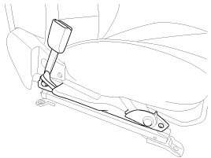

Repair Procedures
Removal
1. Disconnect the battery negative cable, and wait for at least three minutes before beginning work.
2. Remove the front seat assembly.
3. Loosen the seat belt buckle mounting bolt and remove the seat belt buckle switch.

Installation
CAUTION:
Be sure to install the harness wires so they will not pinch or interfere with other parts.
1. Remove the ignition key from the vehicle.
2. Disconnect the battery negative cable, and wait for at least three minutes before beginning work.
3. Install the seat belt buckle switch.
Tightening torque:
39.2 - 53.9 N.m (4.0 - 5.5 kgf.m, 28.9 - 39.8 lb-ft)
4. Install the front seat assembly.
5. Reconnect the battery negative cable.
6. After installing the seat belt buckle switch, confirm proper system operation:
A. Turn the ignition switch ON; the SRS indicator should be turned on for about six seconds and then go off.